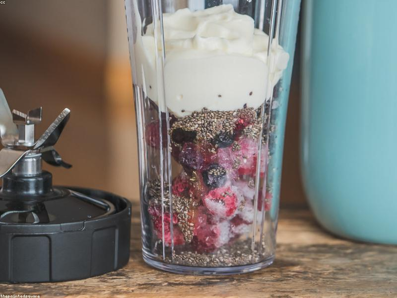

Comer bien sin obsesionarse
Descubre cómo mantener una alimentación saludable sin dietas estrictas ni contar calorías todo el tiempo.
Leer másCómo estar sano sin ser un loco del gimnasio

Descubre cómo mantener una alimentación saludable sin dietas estrictas ni contar calorías todo el tiempo.
Leer másPor qué caminar todos los días es una de las mejores cosas que puedes hacer por tu salud física y mental.
Leer másCómo mantenerse activo con rutinas sencillas desde la comodidad de tu hogar y sin equipo costoso.
Leer más
Descansar lo suficiente es el pilar fundamental para tener energía y salud sin esfuerzo extra.
Leer más
Cómo reducir el tiempo en pantallas puede disminuir tu estrés y mejorar tu calidad de vida.
Leer más